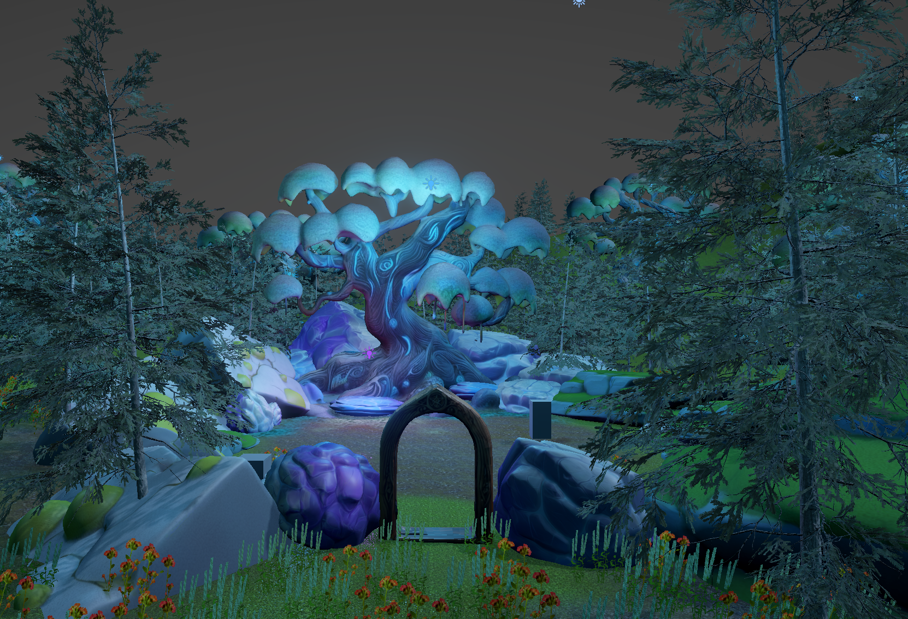
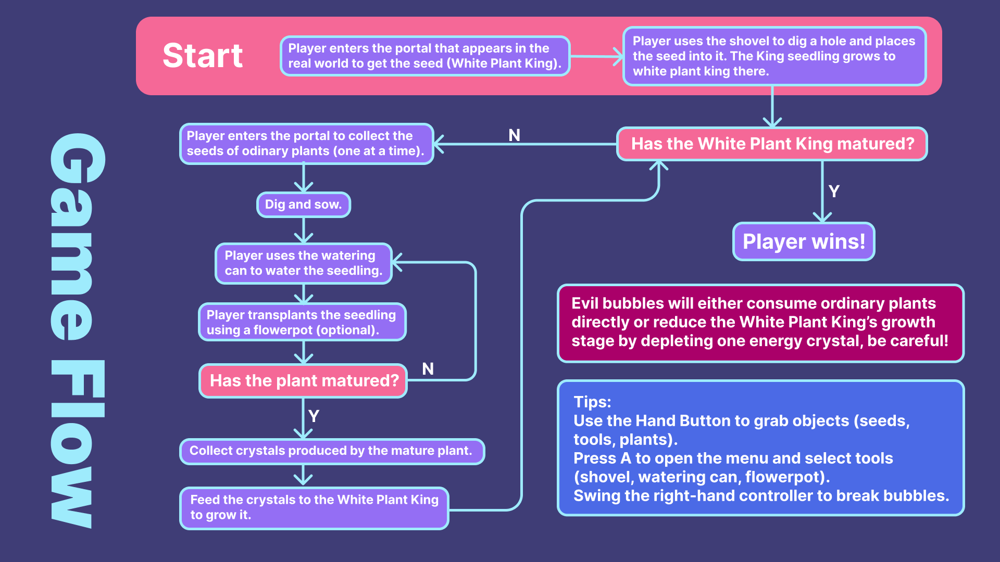
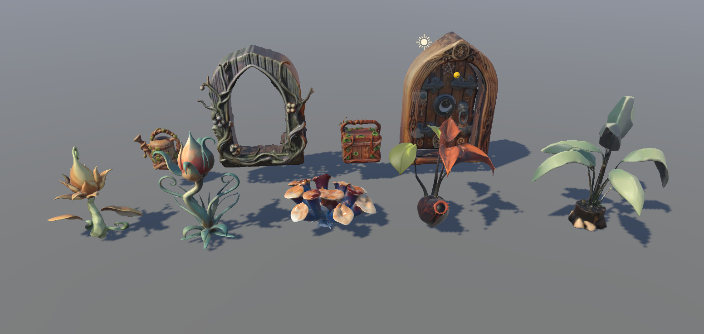
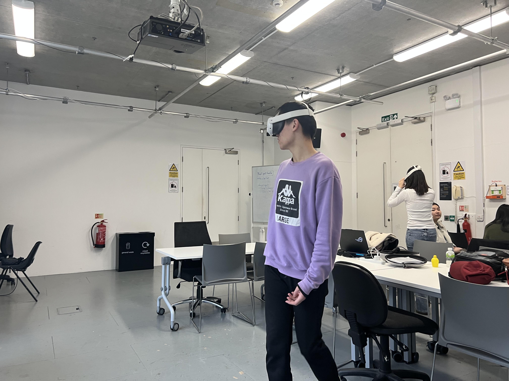

Bloomiverse - AR Planting Adventure
A mixed reality gardening adventure that connects real-world movement, virtual planting, and playful resource loops, inviting players to grow magical flora across the boundary between their physical room and an imagined fantasy ecosystem.
Project Concept
Bloomiverse is an AR gardening adventure where players take on the role of a magical gardener. Through mystical portals, players collect seeds from another world and use tools like shovels, watering cans, and flowerpots to grow plants in their real-world environment. Players must also defend their seedlings by popping evil bubbles that appear randomly to threaten the plants. The ultimate goal is to cultivate the legendary White Plant King by feeding it energy crystals produced by mature plants.
Engaging Visual and Audio Design

The project incorporates custom 3D modeling and artwork to create a magical and whimsical visual atmosphere, including the intricate design of the portal, tools, and plants. A carefully composed soundtrack featuring mystical and calming melodies enhances the magical ambiance, immersing players in the fantastical world of Bloomiverse, both in the augmented real-world garden and within the fully virtual portal world.
Immersive AR Gameplay

Players engage in a unique AR feedback loop, combining physical movements with virtual outcomes. From gathering seeds in a secondary dimension to nurturing them in the local living room, the experience bridges the gap between digital and physical play through tactile-inspired digital interfaces.
Gallery

